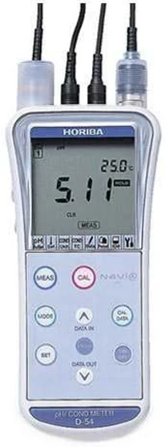
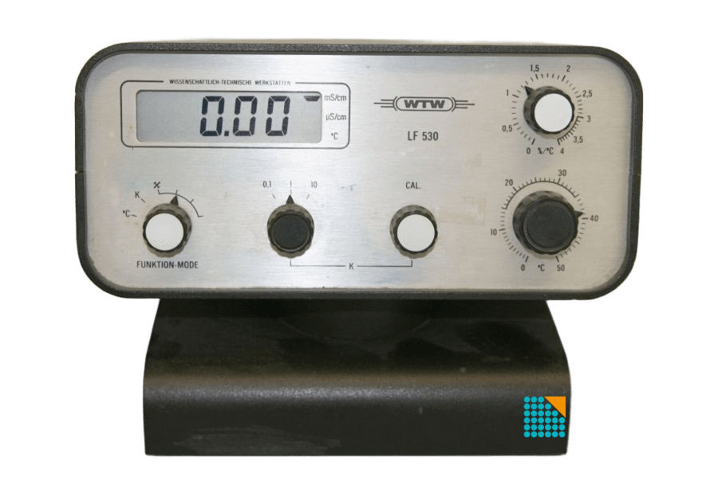
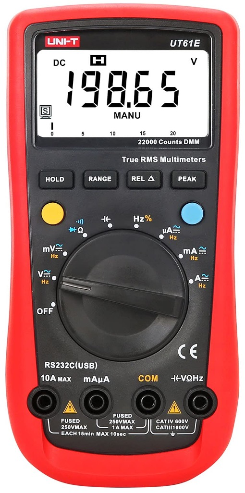

Programa de Electroquímica Aplicada e Ingeniería Electroquímica (PRELINE)


El pH-metro permite determinar con alta precisión la acidez o alcalinidad de soluciones mediante electrodos potenciométricos sensibles a la actividad de los iones hidrógeno.
La medición de pH es fundamental en numerosos procesos químicos, electroquímicos y ambientales, ya que el pH influye en la cinética de reacción, la estabilidad de especies químicas y el comportamiento de materiales en solución.

Los conductímetros permiten determinar la conductividad eléctrica de soluciones, una propiedad relacionada con la concentración y movilidad de los iones presentes en el medio.
La medición de conductividad es ampliamente utilizada para caracterizar electrolitos, evaluar la pureza de soluciones y estudiar procesos de transporte iónico en sistemas electroquímicos.

La medición de potencial eléctrico mediante electrodos redox permite determinar el potencial de oxidación-reducción (ORP) de una solución respecto a un electrodo de referencia.
Este parámetro proporciona información sobre la capacidad oxidante o reductora del medio y es ampliamente utilizado en estudios electroquímicos, control de procesos y análisis ambiental.